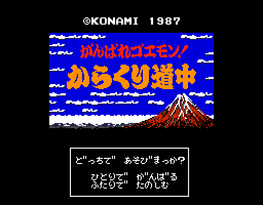
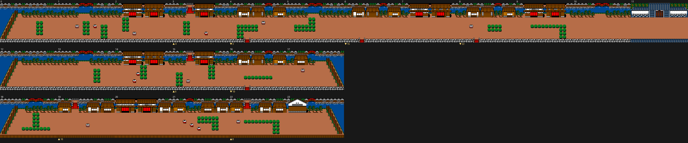
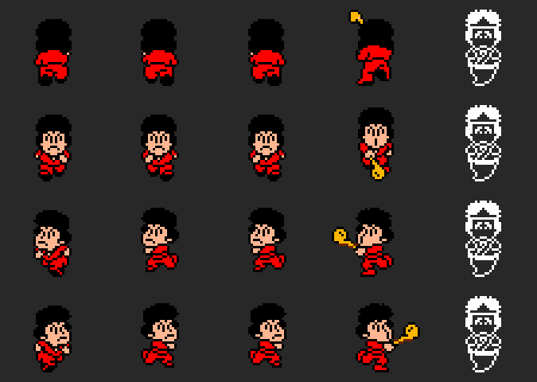
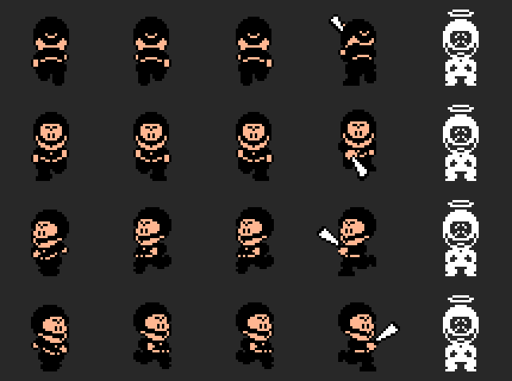
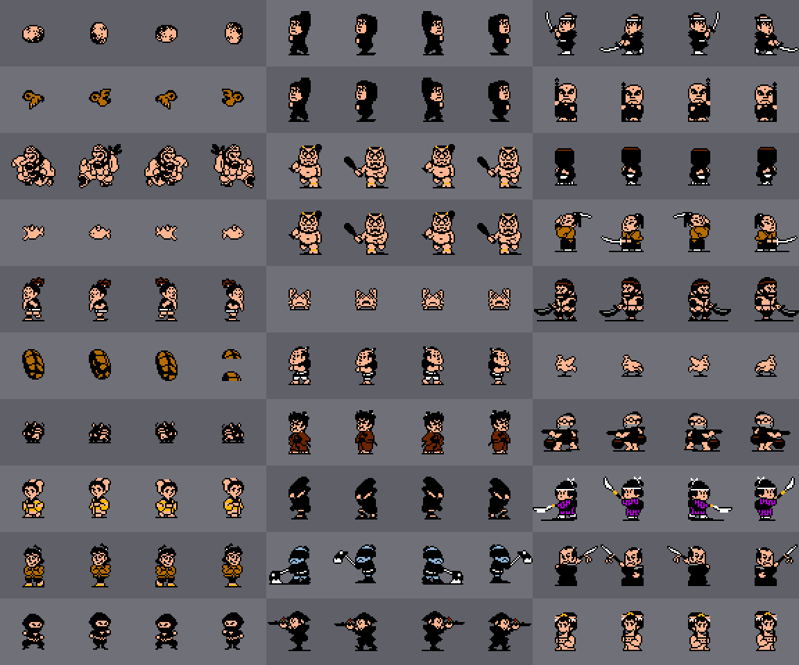
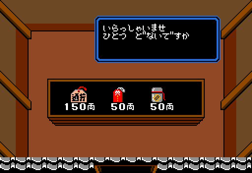
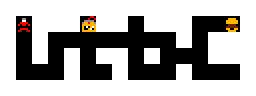

Goemon (o Ebisumaru, el jugador 2) cruza 7 fases de 7 zonas: 49 zonas y 1608 pantallas (las casillas). En cada fase, las zonas 0 a 4 son calles y campo, la 5 son murallas y la 6 es el interior de un castillo, la más grande (de 66 a 80 casillas).
Todas las imágenes de esta página están dibujadas desde los bytes de la ROM con las herramientas de tools/, que siguen los pasos del propio cartucho, y cotejadas contra volcados de openMSX (C-BIOS_MSX2_JP). Debajo de cada una se dice de qué tabla sale.

El menú tiene dos opciones, uno o dos jugadores, y los dos juegan por turnos. El segundo botón lleva a la pantalla de la contraseña (estado 0x0E). El logotipo y el título coinciden con openMSX sin un punto distinto (titulo.py coteja). Con Q\*bert o el Game Master en la otra ranura, el título saca otro menú: está en Hallazgos.

La zona 0 de la fase 1. Cada fila es una calle: casillas seguidas de izquierda a derecha (p00:4188). Debajo de cada casilla, las flechas dicen a qué casilla llevan sus salidas de arriba y de abajo (0xB7D0). La flecha azul de la derecha marca una calle que vuelve a empezar.
Las salidas de arriba y de abajo no son geométricas: en esta zona, subir desde la casilla 3 lleva a la 4, que también está a su derecha. Por eso los planos van por calles y no en rejilla. Las figuras que se mueven no se pintan, porque dependen de la partida; las cosas fijas (0xA08E), sí. Las 49 entradas de zona están cotejadas contra openMSX (pantalla, caracteres y paleta).
| Fase | Zona 0 | 1 | 2 | 3 | 4 | 5 | 6 |
|---|---|---|---|---|---|---|---|
| 1 | 24 | 14 | 16 | 20 | 26 | 38 | 66 |
| 2 | 16 | 20 | 24 | 18 | 20 | 38 | 70 |
| 3 | 34 | 18 | 18 | 18 | 24 | 44 | 80 |
| 4 | 28 | 18 | 22 | 30 | 30 | 38 | 66 |
| 5 | 30 | 24 | 22 | 16 | 18 | 38 | 70 |
| 6 | 22 | 34 | 30 | 20 | 30 | 44 | 66 |
| 7 | 24 | 16 | 22 | 34 | 32 | 58 | 80 |
Casillas de cada zona (primer byte de su ficha, 0xB7D0); cada número lleva a su plano.
Una casilla son 8 × 6 bloques de 4 × 4 caracteres (p00:5275). Se monta en 0xD800 y se pinta carácter a carácter con HMMM, de la página 1 a la 0 (p00:534E), en SCREEN 5. Cada zona tiene su juego de gráficos (0xB8EC, seis en total) con sus caracteres y su paleta: la base (0xA3E6), la del juego (0xA37A) y unos colores del sitio que cambian algunas salidas (0xA4C5).


Las 20 poses de cada uno: dibujos, sprites y colores cotejados con la pose de cada volcado.
La vida empieza en 0x10 (0x20 con una de las claves), y el tiempo corre en BCD (0xC4B0). Por debajo de 50 segundos suena la música de las prisas (p01:714E).

Los 30 tipos que salen en las casillas, con la pose base y las tres siguientes (0xAA51), cada uno con la paleta de la primera zona donde sale.
Cada casilla tiene un conjunto de figuras: un nibble en la tabla de su zona (0x9BF0) elige una lista en la tabla de su juego de gráficos (0x5BB2). Las listas coinciden con las figuras de los 49 volcados. Cuando el golpe le da, cada tipo suma el dinero de 0xB86D (5, 10 o 20 ryo, o nada), salvo los tipos 8 y 0x21, que cuestan 50 ryo; tocarlos, en cambio, da 1000 puntos (p01:79C8). Hay 107 figuras de los volcados cotejadas a cero.
Los tipos 0x12 y 0x1D no salen en las casillas: son figuras de la escena del final de fase (p02:9AA6, p02:9B6E).

Hay 21 interiores (0x9567); cada uno tiene sus figuras y lo que vende.
Los 21 están dibujados y cotejados a cero contra openMSX, y los de las tiendas también abiertos.
Los precios (0x9371) dependen de tres cosas:
| Cosa | Lo que hace (0xADEB) | Precio, clase 0, tramo 0 |
|---|---|---|
| 1, 10 | una más, hasta 3 | 30, 150 |
| 2, 8 | la tienes | 20, 120 |
| 3–7 | cinco golpes | 50 |
| 9 | 100 segundos | 40 |
| 11 / 12 | 16 / 8 de vida | 30 / 20 |
| 13 | 200 segundos más | 50 |
La tabla entera, con las tres clases y los cuatro tramos (en ryo):
| Clase, tramo | 1 | 2 | 3 | 4 | 5 | 6 | 7 | 8 | 9 | 10 | 11 | 12 | 13 | 14 | 15 | 16 |
|---|---|---|---|---|---|---|---|---|---|---|---|---|---|---|---|---|
| 0, 0 | 30 | 20 | 50 | 50 | 50 | 50 | 50 | 120 | 40 | 150 | 30 | 20 | 50 | 5 | 50 | 100 |
| 0, 1 | 60 | 40 | 100 | 100 | 100 | 100 | 100 | 250 | 180 | 300 | 60 | 40 | 100 | 0 | 150 | 240 |
| 0, 2 | 90 | 60 | 280 | 280 | 300 | 300 | 300 | 400 | 440 | 800 | 90 | 60 | 280 | 0 | 500 | 420 |
| 0, 3 | 120 | 100 | 600 | 600 | 400 | 400 | 400 | 500 | 600 | 1500 | 120 | 100 | 600 | 0 | 700 | 620 |
| 1, 0 | 30 | 20 | 40 | 40 | 50 | 50 | 50 | 150 | 50 | 150 | 30 | 20 | 40 | 0 | 50 | 100 |
| 1, 1 | 60 | 40 | 80 | 80 | 150 | 150 | 150 | 300 | 160 | 400 | 60 | 40 | 80 | 0 | 200 | 280 |
| 1, 2 | 90 | 60 | 250 | 250 | 400 | 400 | 400 | 500 | 1200 | 700 | 90 | 60 | 250 | 0 | 500 | 400 |
| 1, 3 | 150 | 120 | 420 | 420 | 600 | 600 | 600 | 800 | 1200 | 1200 | 150 | 120 | 420 | 0 | 700 | 520 |
| 2, 0 | 50 | 30 | 80 | 80 | 50 | 50 | 50 | 400 | 100 | 2000 | 50 | 30 | 80 | 0 | 50 | 100 |
| 2, 1 | 100 | 60 | 150 | 150 | 100 | 100 | 100 | 500 | 250 | 2000 | 100 | 60 | 150 | 0 | 200 | 380 |
| 2, 2 | 150 | 100 | 300 | 300 | 250 | 250 | 250 | 600 | 600 | 2000 | 150 | 100 | 300 | 0 | 600 | 580 |
| 2, 3 | 250 | 200 | 700 | 700 | 500 | 500 | 500 | 1000 | 1500 | 2000 | 250 | 200 | 700 | 0 | 800 | 780 |

El mapa del pasadizo de la zona 1-0, como lo enseña el juego (p03:BB1B): cada casilla es una pieza de 8 × 8, y Goemon, arriba a la izquierda, está donde se empieza.
En cada zona, menos en la 5 de cada fase, el interior 16 ofrece llevarte «al pasadizo secreto del fondo». Son 42 pasadizos, hechos con 16 dibujos (0xA86D) que se repiten con lo de dentro en otro sitio (0xA575). Se recorren en primera persona: arriba avanza, izquierda y derecha giran, y abajo da media vuelta (p03:B8C3).
Los 42 están cotejados contra openMSX: la rejilla de 0xD800, el mapa punto a punto y la paleta.
| Fase | Zona 0 | 1 | 2 | 3 | 4 | 6 |
|---|---|---|---|---|---|---|
| 1 | 2 | 4 | 11 | 18 | 19 | 26 |
| 2 | 6 | 13 | 22 | 16 | 8 | 51 |
| 3 | 13 | 15 | 7 | 8 | 16 | 3 |
| 4 | 19 | 9 | 6 | 24 | 28 | 44 |
| 5 | 10 | 20 | 12 | 4 | 15 | 54 |
| 6 | 20 | 27 | 20 | 7 | 24 | 22 |
| 7 | 13 | 10 | 14 | 21 | 24 | 0 |
La casilla del interior 16 en cada zona; cada número lleva al mapa de su pasadizo.
Son 9 caracteres. A cada uno se le resta 0x30, se desordenan con la clave de 0xEBC6 y llevan suma de control (p01:6C7A). Guardan la fase, el jugador, la zona, la casilla y los colores. F2 en la pausa la enseña, y la misma pantalla acepta cuatro claves (ver Hallazgos).
El señor de la fase dice su texto (0x9E0B, uno por fase) y promete gobernar mejor. El juego tiene cuatro finales distintos: están en Hallazgos.